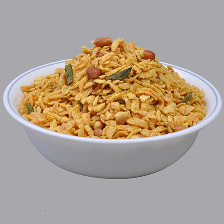

Ingredients
1.Thin Poha ( Pressed rice) - 2 cups
2.Puffed Rice - 1 cup
3.Oil - 2 tblsp
4.Mustard Seeds - 1 tsp
5.Curry Leaves - 1 strand
6.Green Chillies - 2-3 (or to taste - finely chopped)
7.Roasted Chana Dal (Dalia) - 3 tblsp
8.Roasted Peanuts - 3 tblsp
9.Raisins - 1 tblsp
10.Turmeric Powder - 1/2 tsp
11.Salt - 1 tsp (or to taste)
Optional Ingredients
1.Amchur Powder/ Citric Acid - 1/4 tsp
2.Sugar - 1 tsp
Method
1.
Microwave the poha and puffed rice together in a microwave safe
bowl for 2 minutes. Stir after every 30 seconds.
2. Heat oil in a pan, splutter the mustard seeds, green chillies
and curry leaves.
3. Add the turmeric powder, salt and amchur powder in the oil
itself.
4. Add this tadka to the poha and puffed rice mixture along with
roasted peanuts, raisins, dalia and sugar.
5. Toss everything together until the turmeric powder and the
salt coats the poha nicely.
6. Microwave the mixture again for another 1 minute.
7. After it cools down, you can store it in an airtight
container for up to a month and enjoy as a healthy snack with
tea.